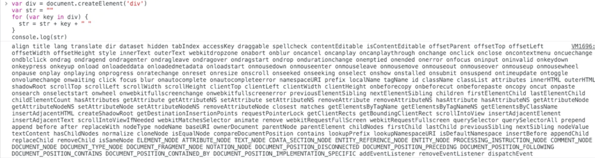

什么是虚拟DOM？如何实现一个虚拟DOM？说说你的思路
参考答案
一、什么是虚拟DOM
虚拟 DOM （Virtual DOM ）这个概念相信大家都不陌生，从 React 到 Vue ，虚拟 DOM 为这两个框架都带来了跨平台的能力（React-Native 和 Weex）
实际上它只是一层对真实DOM的抽象，以JavaScript 对象 (VNode 节点) 作为基础的树，用对象的属性来描述节点，最终可以通过一系列操作使这棵树映射到真实环境上
在Javascript对象中，虚拟DOM 表现为一个 Object 对象。并且最少包含标签名 (tag)、属性 (attrs) 和子元素对象 (children) 三个属性，不同框架对这三个属性的名命可能会有差别
创建虚拟DOM就是为了更好将虚拟的节点渲染到页面视图中，所以虚拟DOM对象的节点与真实DOM的属性一一照应
在vue中同样使用到了虚拟DOM技术
定义真实DOM
<div id="app">
<p class="p">节点内容</p>
<h3>{{ foo }}</h3>
</div>实例化vue
const app = new Vue({
el:"#app",
data:{
foo:"foo"
}
})观察render的render，我们能得到虚拟DOM
(function anonymous(
) {
with(this){return _c('div',{attrs:{"id":"app"}},[_c('p',{staticClass:"p"},
[_v("节点内容")]),_v(" "),_c('h3',[_v(_s(foo))])])}})通过VNode，vue可以对这颗抽象树进行创建节点,删除节点以及修改节点的操作， 经过diff算法得出一些需要修改的最小单位,再更新视图，减少了dom操作，提高了性能
二、为什么需要虚拟DOM
DOM是很慢的，其元素非常庞大，页面的性能问题，大部分都是由DOM操作引起的
真实的DOM节点，哪怕一个最简单的div也包含着很多属性，可以打印出来直观感受一下：<br>

由此可见，操作DOM的代价仍旧是昂贵的，频繁操作还是会出现页面卡顿，影响用户的体验
举个例子：
你用传统的原生api或jQuery去操作DOM时，浏览器会从构建DOM树开始从头到尾执行一遍流程
当你在一次操作时，需要更新10个DOM节点，浏览器没这么智能，收到第一个更新DOM请求后，并不知道后续还有9次更新操作，因此会马上执行流程，最终执行10次流程
而通过VNode，同样更新10个DOM节点，虚拟DOM不会立即操作DOM，而是将这10次更新的diff内容保存到本地的一个js对象中，最终将这个js对象一次性attach到DOM树上，避免大量的无谓计算
很多人认为虚拟 DOM 最大的优势是 diff 算法，减少 JavaScript 操作真实 DOM 的带来的性能消耗。虽然这一个虚拟 DOM 带来的一个优势，但并不是全部。虚拟 DOM 最大的优势在于抽象了原本的渲染过程，实现了跨平台的能力，而不仅仅局限于浏览器的 DOM，可以是安卓和 IOS 的原生组件，可以是近期很火热的小程序，也可以是各种GUI
三、如何实现虚拟DOM
首先可以看看vue中VNode的结构
源码位置：src/core/vdom/vnode.js
export default class VNode {
tag: string | void;
data: VNodeData | void;
children: ?Array<VNode>;
text: string | void;
elm: Node | void;
ns: string | void;
context: Component | void; // rendered in this component's scope
functionalContext: Component | void; // only for functional component root nodes
key: string | number | void;
componentOptions: VNodeComponentOptions | void;
componentInstance: Component | void; // component instance
parent: VNode | void; // component placeholder node
raw: boolean; // contains raw HTML? (server only)
isStatic: boolean; // hoisted static node
isRootInsert: boolean; // necessary for enter transition check
isComment: boolean; // empty comment placeholder?
isCloned: boolean; // is a cloned node?
isOnce: boolean; // is a v-once node?
constructor (
tag?: string,
data?: VNodeData,
children?: ?Array<VNode>,
text?: string,
elm?: Node,
context?: Component,
componentOptions?: VNodeComponentOptions
) {
/*当前节点的标签名*/
this.tag = tag
/*当前节点对应的对象，包含了具体的一些数据信息，是一个VNodeData类型，可以参考VNodeData类型中的数据信息*/
this.data = data
/*当前节点的子节点，是一个数组*/
this.children = children
/*当前节点的文本*/
this.text = text
/*当前虚拟节点对应的真实dom节点*/
this.elm = elm
/*当前节点的名字空间*/
this.ns = undefined
/*编译作用域*/
this.context = context
/*函数化组件作用域*/
this.functionalContext = undefined
/*节点的key属性，被当作节点的标志，用以优化*/
this.key = data && data.key
/*组件的option选项*/
this.componentOptions = componentOptions
/*当前节点对应的组件的实例*/
this.componentInstance = undefined
/*当前节点的父节点*/
this.parent = undefined
/*简而言之就是是否为原生HTML或只是普通文本，innerHTML的时候为true，textContent的时候为false*/
this.raw = false
/*静态节点标志*/
this.isStatic = false
/*是否作为跟节点插入*/
this.isRootInsert = true
/*是否为注释节点*/
this.isComment = false
/*是否为克隆节点*/
this.isCloned = false
/*是否有v-once指令*/
this.isOnce = false
}
// DEPRECATED: alias for componentInstance for backwards compat.
/* istanbul ignore next https://github.com/answershuto/learnVue*/
get child (): Component | void {
return this.componentInstance
}
}这里对VNode进行稍微的说明：
- 所有对象的
context选项都指向了Vue实例 elm属性则指向了其相对应的真实DOM节点
vue是通过createElement生成VNode
源码位置：src/core/vdom/create-element.js
export function createElement (
context: Component,
tag: any,
data: any,
children: any,
normalizationType: any,
alwaysNormalize: boolean
): VNode | Array<VNode> {
if (Array.isArray(data) || isPrimitive(data)) {
normalizationType = children
children = data
data = undefined
}
if (isTrue(alwaysNormalize)) {
normalizationType = ALWAYS_NORMALIZE
}
return _createElement(context, tag, data, children, normalizationType)
}上面可以看到createElement 方法实际上是对 _createElement 方法的封装，对参数的传入进行了判断
export function _createElement(
context: Component,
tag?: string | Class<Component> | Function | Object,
data?: VNodeData,
children?: any,
normalizationType?: number
): VNode | Array<VNode> {
if (isDef(data) && isDef((data: any).__ob__)) {
process.env.NODE_ENV !== 'production' && warn(
`Avoid using observed data object as vnode data: ${JSON.stringify(data)}\n` +
'Always create fresh vnode data objects in each render!',
context`
)
return createEmptyVNode()
}
// object syntax in v-bind
if (isDef(data) && isDef(data.is)) {
tag = data.is
}
if (!tag) {
// in case of component :is set to falsy value
return createEmptyVNode()
}
...
// support single function children as default scoped slot
if (Array.isArray(children) &&
typeof children[0] === 'function'
) {
data = data || {}
data.scopedSlots = { default: children[0] }
children.length = 0
}
if (normalizationType === ALWAYS_NORMALIZE) {
children = normalizeChildren(children)
} else if ( === SIMPLE_NORMALIZE) {
children = simpleNormalizeChildren(children)
}
// 创建VNode
...
}可以看到_createElement接收5个参数：
context表示VNode的上下文环境，是Component类型- tag 表示标签，它可以是一个字符串，也可以是一个
Component
data表示VNode的数据，它是一个VNodeData类型
children表示当前VNode的子节点，它是任意类型的
normalizationType表示子节点规范的类型，类型不同规范的方法也就不一样，主要是参考render函数是编译生成的还是用户手写的
根据normalizationType 的类型，children会有不同的定义
if (normalizationType === ALWAYS_NORMALIZE) {
children = normalizeChildren(children)
} else if ( === SIMPLE_NORMALIZE) {
children = simpleNormalizeChildren(children)
}simpleNormalizeChildren方法调用场景是 render 函数是编译生成的
normalizeChildren方法调用场景分为下面两种：
render函数是用户手写的- 编译
slot、v-for的时候会产生嵌套数组
无论是simpleNormalizeChildren还是normalizeChildren都是对children进行规范（使children 变成了一个类型为 VNode 的 Array），这里就不展开说了
规范化children的源码位置在：src/core/vdom/helpers/normalzie-children.js
在规范化children后，就去创建VNode
let vnode, ns
// 对tag进行判断
if (typeof tag === 'string') {
let Ctor
ns = (context.$vnode && context.$vnode.ns) || config.getTagNamespace(tag)
if (config.isReservedTag(tag)) {
// 如果是内置的节点，则直接创建一个普通VNode
vnode = new VNode(
config.parsePlatformTagName(tag), data, children,
undefined, undefined, context
)
} else if (isDef(Ctor = resolveAsset(context.$options, 'components', tag))) {
// component
// 如果是component类型，则会通过createComponent创建VNode节点
vnode = createComponent(Ctor, data, context, children, tag)
} else {
vnode = new VNode(
tag, data, children,
undefined, undefined, context
)
}
} else {
// direct component options / constructor
vnode = createComponent(tag, data, context, children)
}createComponent同样是创建VNode
源码位置：src/core/vdom/create-component.js
export function createComponent (
Ctor: Class<Component> | Function | Object | void,
data: ?VNodeData,
context: Component,
children: ?Array<VNode>,
tag?: string
): VNode | Array<VNode> | void {
if (isUndef(Ctor)) {
return
}
// 构建子类构造函数
const baseCtor = context.$options._base
// plain options object: turn it into a constructor
if (isObject(Ctor)) {
Ctor = baseCtor.extend(Ctor)
}
// if at this stage it's not a constructor or an async component factory,
// reject.
if (typeof Ctor !== 'function') {
if (process.env.NODE_ENV !== 'production') {
warn(`Invalid Component definition: ${String(Ctor)}`, context)
}
return
}
// async component
let asyncFactory
if (isUndef(Ctor.cid)) {
asyncFactory = Ctor
Ctor = resolveAsyncComponent(asyncFactory, baseCtor, context)
if (Ctor === undefined) {
return createAsyncPlaceholder(
asyncFactory,
data,
context,
children,
tag
)
}
}
data = data || {}
// resolve constructor options in case global mixins are applied after
// component constructor creation
resolveConstructorOptions(Ctor)
// transform component v-model data into props & events
if (isDef(data.model)) {
transformModel(Ctor.options, data)
}
// extract props
const propsData = extractPropsFromVNodeData(data, Ctor, tag)
// functional component
if (isTrue(Ctor.options.functional)) {
return createFunctionalComponent(Ctor, propsData, data, context, children)
}
// extract listeners, since these needs to be treated as
// child component listeners instead of DOM listeners
const listeners = data.on
// replace with listeners with .native modifier
// so it gets processed during parent component patch.
data.on = data.nativeOn
if (isTrue(Ctor.options.abstract)) {
const slot = data.slot
data = {}
if (slot) {
data.slot = slot
}
}
// 安装组件钩子函数，把钩子函数合并到data.hook中
installComponentHooks(data)
//实例化一个VNode返回。组件的VNode是没有children的
const name = Ctor.options.name || tag
const vnode = new VNode(
`vue-component-${Ctor.cid}${name ? `-${name}` : ''}`,
data, undefined, undefined, undefined, context,
{ Ctor, propsData, listeners, tag, children },
asyncFactory
)
if (__WEEX__ && isRecyclableComponent(vnode)) {
return renderRecyclableComponentTemplate(vnode)
}
return vnode
}稍微提下createComponent生成VNode的三个关键流程：
- 构造子类构造函数
Ctor installComponentHooks安装组件钩子函数- 实例化
vnode
小结
createElement 创建 VNode 的过程，每个 VNode 有 children，children 每个元素也是一个VNode，这样就形成了一个虚拟树结构，用于描述真实的DOM树结构
虚拟DOM（Virtual DOM）是一种抽象层，它将真实的DOM操作转换为JavaScript对象的操作，这些对象被称为VNode（虚拟节点）。
VNode对象通常包含标签名、属性、子节点和文本等属性，以模拟真实的DOM节点。通过这种方式，可以对虚拟DOM进行高效操作，比如创建、删除和修改节点，而无需直接操作真实的DOM，从而提高了性能。
Vue.js 框架使用虚拟DOM来实现高效的DOM更新。在Vue中，每当数据变化时，会通过一系列操作（如创建VNode、更新VNode等）来更新虚拟DOM，然后通过diff算法比较新旧虚拟DOM，找出需要更新的最小单位，最后将这些更新应用到真实的DOM上。
虚拟DOM的主要优势在于它提供了一种高效的DOM操作方式，并且具有跨平台的能力。通过虚拟DOM，Vue能够支持如React Native和Weex等跨平台应用的开发。
在Vue中，createElement函数用于创建VNode。这个函数接收几个参数，包括上下文环境、标签名、数据对象（包含属性、事件监听器等）、子节点等，并返回一个VNode对象。VNode对象可以包含子节点，形成一个虚拟树结构，这个结构最终会被映射到真实的DOM树上。